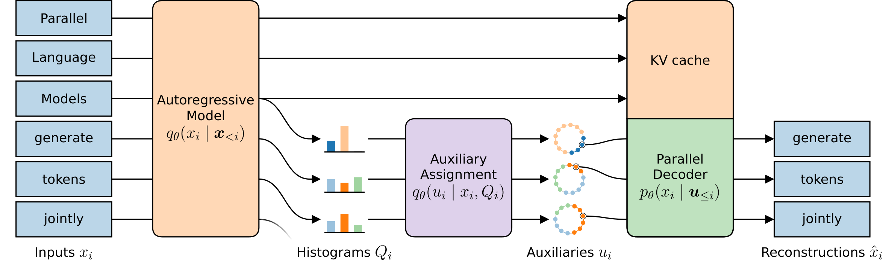
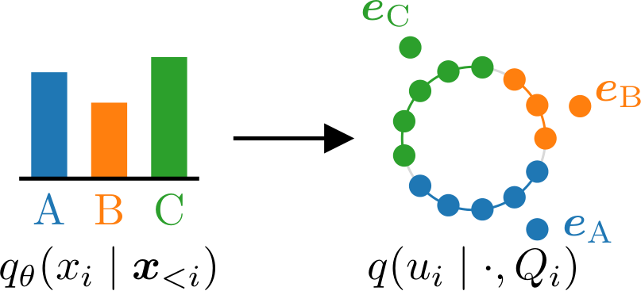
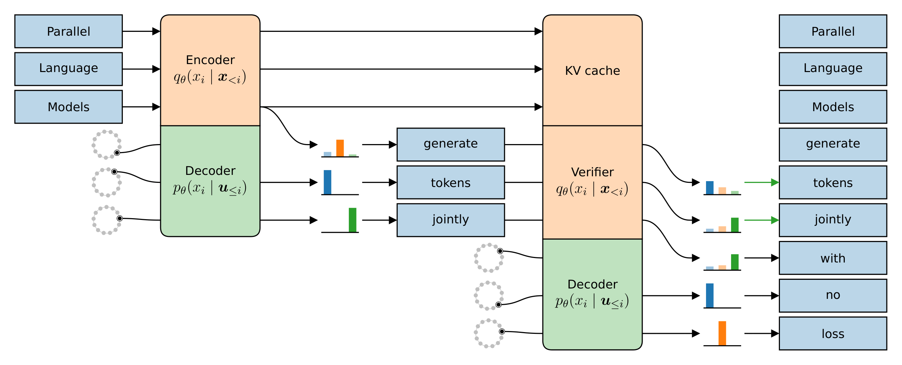
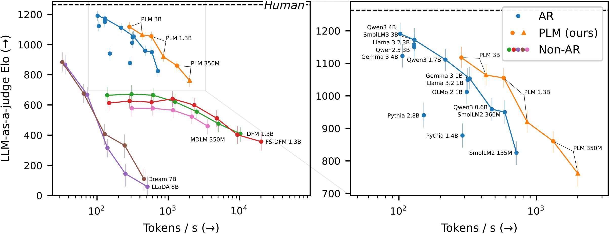
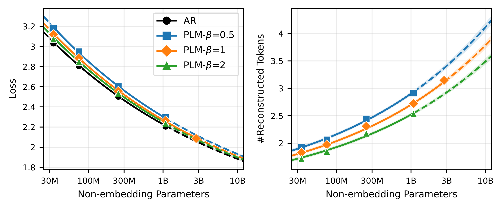

PLMs are language models that generate several coordinated tokens in one forward pass, trained from scratch on a loss that includes a parallel decoding objective. They match autoregressive quality while answering 2.3–5.7× faster, and get more parallel as they scale.
Autoregressive language models emit one token per forward pass. This causes high inference latency, in particular as models are scaled up for quality. In this paper, we introduce Parallel Language Models (PLMs), which generate mutually consistent tokens in one forward pass by routing dependencies through latent auxiliary variables. PLMs are trained using a variational bound that reduces to an autoregressive loss plus a parallel decoding loss. Empirically, PLMs are on a faster and better Pareto frontier than autoregressive and discrete diffusion baselines. Pretrained PLMs achieve near-autoregressive pretraining loss on model scales of 80M to 3B parameters, and speedup follows a power law in model size. When post-trained, our 1.3B model matches or exceeds an identically trained autoregressive model on math, coding, and instruction-following benchmarks, speeding up inference 2.3–5.7×. Together, we show that parallel generation can be trained from a single training objective at autoregressive quality.
We view parallel text generation through the lens of a variational auto-encoder. During inference, a parallel decoder maps a vector of random auxiliaries to a coherent sequence in a single model call. The auxiliaries fully capture the dependencies between tokens. To train directly on text, a PLM pairs the decoder with an autoregressive encoder that maps each training token to an auxiliary that decodes back to it. Maximizing an evidence lower bound (ELBO) on the data likelihood then reduces to a simple objective: a standard autoregressive loss for the encoder plus a parallel reconstruction loss for the decoder. Encoder and decoder share all transformer weights and differ only in their input embeddings.

Auxiliaries are a fixed set of unit vectors in the model's embedding space. Each one is assigned to its most similar token embedding, with a per-token bias so that the share of auxiliaries belonging to a token equals its probability under the autoregressive encoder — a weighted Voronoi tessellation of the sphere. Unlike quantile-based auxiliaries, this naturally exploits similarity between tokens.

At inference, randomly drawn auxiliaries are fed to the decoder, which proposes a block of coordinated tokens in one call. In the next call, the encoder verifies these proposals while the decoder already proposes the next block — both in a single forward pass (adapting Quadratic Decoding). Beyond exact verification, a relaxed acceptance rule keeps any proposed token that is likely under the encoder, increasing accepted tokens per call by 46.5% on average at comparable quality.

After pretraining, PLMs beat publicly available autoregressive and discrete diffusion models on text continuation. PLMs outperform autoregressive models at the same inference speed, despite being trained on only 25B–300B tokens versus trillions, and outperform all tested discrete diffusion models, including few-step ones.

Across 80M to 3B parameters, PLMs reach near-autoregressive loss. They get more parallel with scale, as the amount of correctly reconstructed grows as a power law in model size and training tokens. The encoder-to-decoder ratio β controls the quality–parallelism trade-off.

After SFT and DPO, our 1.3B PLMs match or exceed an identically post-trained autoregressive model on math, coding, and instruction following, while answering 2.3–5.7× faster. The 3B PLM improves quality further.
@article{draxler2026plm,
title={Parallel Language Models via Variational Decoding},
author={Felix Draxler and Robin C. Geyer and Daniel Geyfman and Farrin Marouf Sofian and Justus Will and Philipp Hildebrandt and Giosue Migliorini and Prakhar Srivastava and Gagan Sai Trinadh Duggaraju Peddiraju and Kushagra Pandey and Jorge da Silva Gon{\c{c}}alves and Elijah Tavares and Jan Niklas Groeneveld and Yang Meng and Julia E. Vogt and Stephan Mandt},
journal={arXiv preprint arXiv:2610.26693},
year={2026}
}